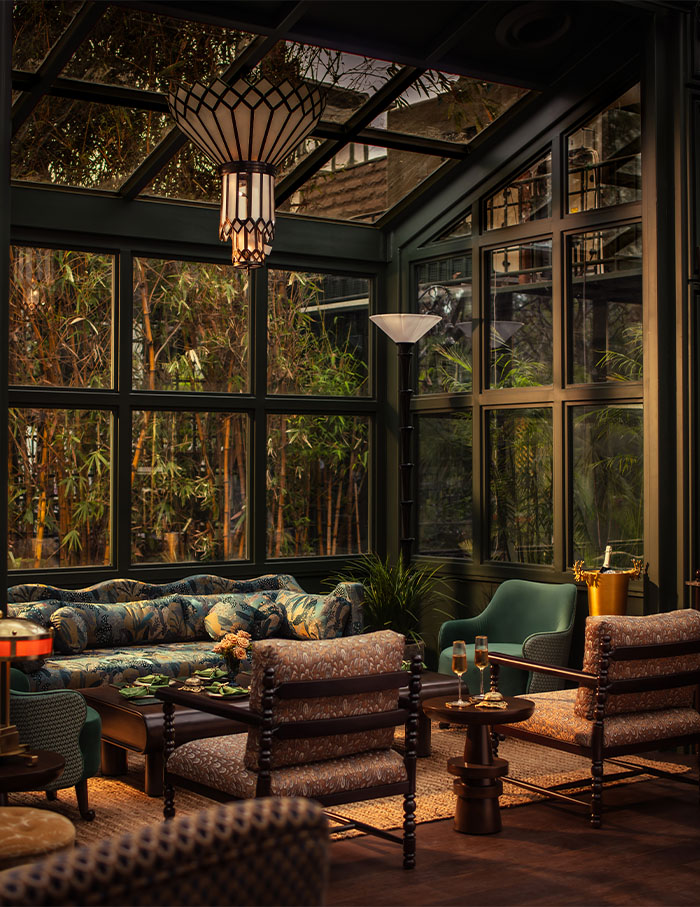
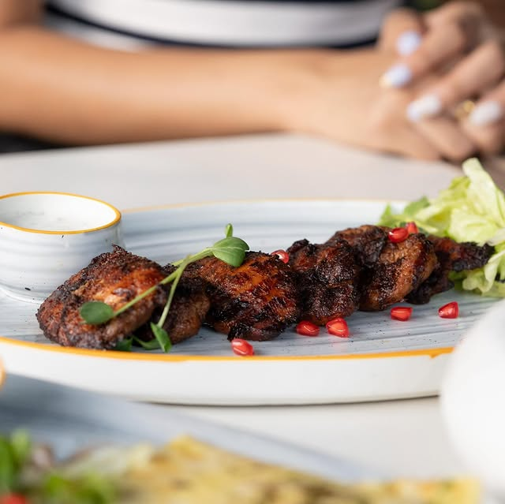
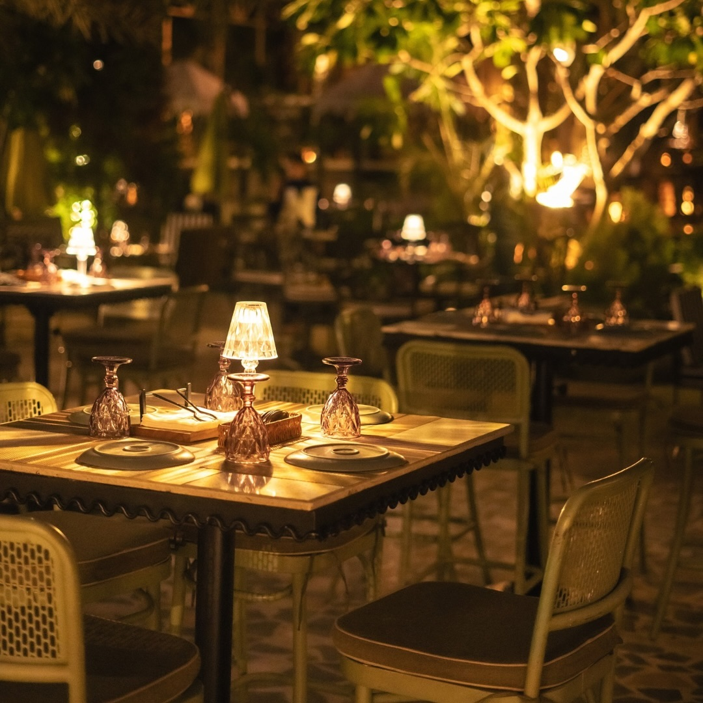

A place you end up staying longer than planned.
Elgin Cafe is Amritsar's best wood-fired Italian restaurant and cocktail bar — established in 2022, tucked inside the city's historic Cantonment on Ajnala Road, on the left from Ivy Hospital. Emerald walls, candlelight, hand-tossed pizzas from a real wood-fired oven, and 15+ signature craft cocktails — all in one intimate setting in Amritsar Cantonment.
A brand extension of the Elgin Hospitality Group, Elgin Cafe has served thousands of guests since 2022, earning a 4.6-star reputation as Amritsar's go-to destination for date nights, anniversary dinners, and celebratory evenings. Open daily from 12 PM to 11 PM — no occasion needed.
Explore the Menu
A room that earns
its keep.



Frequently Asked
Questions
Elgin Cafe is Amritsar's best wood-fired Italian restaurant and cocktail bar, established in 2022 by the Elgin Hospitality Group. Located in Amritsar Cantonment on Ajnala Road near Ivy Hospital — known for its candlelit emerald interior, hand-tossed wood-fired pizzas, and 15+ signature cocktails.
Wood-fired Italian cuisine — hand-tossed pizzas, classic pasta, European mains, 15+ signature craft cocktails, and artisan desserts made entirely in-house daily. The best Italian food in Amritsar Cantonment.
Plot No. 5, Inside 2nd Lane, D R Enclave, Ajnala Road, Amritsar Cantonment, Punjab 143001 — on the left from Ivy Hospital on Ajnala Road. Easy to find with parking nearby.
Open 7 days a week, 12:00 PM to 11:00 PM — including weekends and public holidays. Reservations recommended for Friday and Saturday evenings.
Call +91 70879 34000, email hello@elgincafe.in, or WhatsApp +91 78885 46281. Walk-ins welcome subject to availability.
Yes — Elgin Cafe is one of Amritsar's top choices for date nights, anniversaries, and romantic dinners. The candlelit emerald interior, intimate seating, wood-fired food, and craft cocktails make it unlike any other restaurant in Amritsar Cantonment.
Hand-tossed dough baked in a real wood-fired oven — producing a smoky, blistered crust unique to wood-fire cooking. Fresh seasonal toppings, artisan dough, widely regarded as the best pizza in Amritsar and Amritsar Cantonment.
Yes — a full craft cocktail bar with 15+ signature drinks, from Italian aperitivos and spritzes to bold originals. Open daily 12 PM to 11 PM in Amritsar Cantonment.
Elgin Cafe is widely considered the best restaurant in Amritsar Cantonment — especially for Italian food, wood-fired pizza, craft cocktails, and intimate evening dining. Rated 4.6 stars, serving thousands of guests since 2022.
Elgin Cafe is the best Italian restaurant near Ivy Hospital on Ajnala Road, Amritsar — located directly on the left from Ivy Hospital in D R Enclave. The closest and highest-rated wood-fired Italian restaurant in the area.
Come as you are.
Stay as long as you like.
Address
On left from Ivy Hospital, Ajnala Rd.,
Inside 2nd Lane, D R Enclave,
Amritsar Cantonment, Punjab 143001
Hours
Open Daily — 12:00 PM to 11:00 PM
7 days a week, including weekends